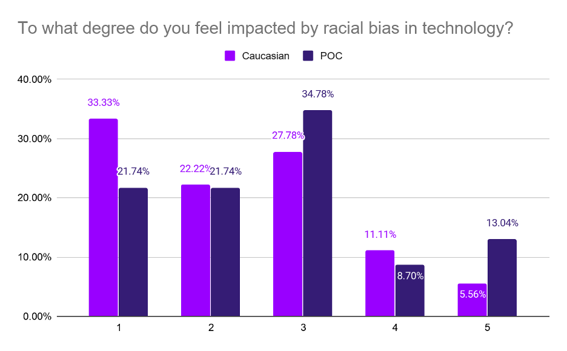
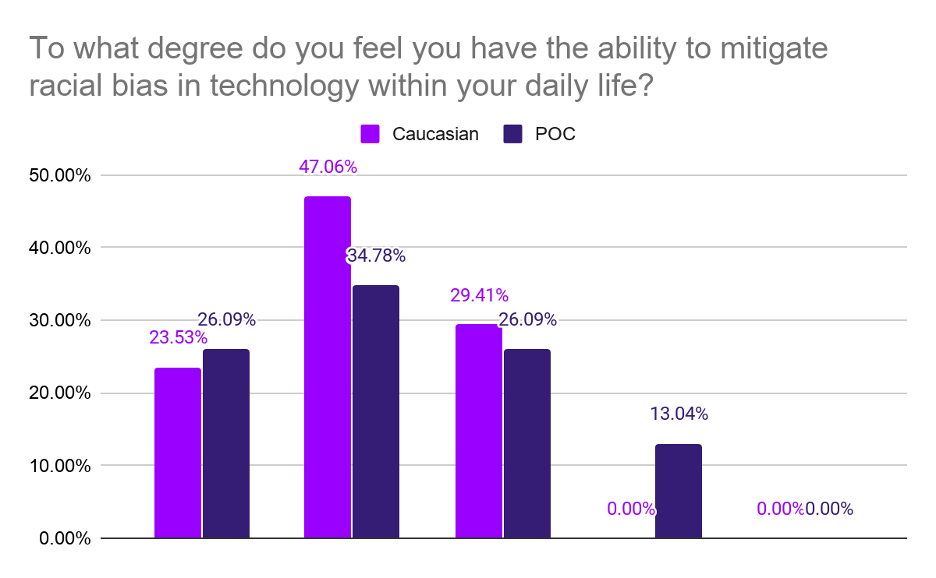
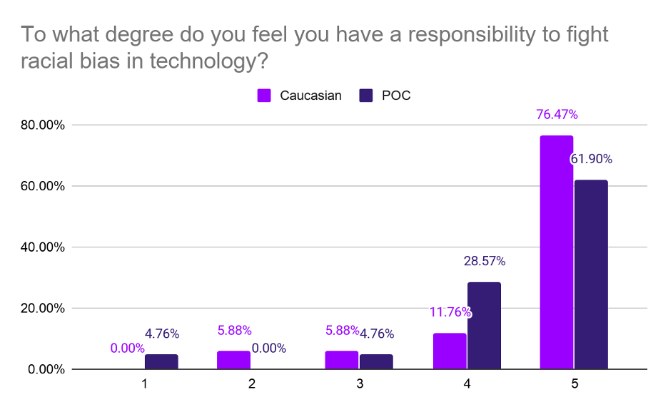

“Why let the new technology reinforce old biases?" - Renée Cummings, CEO of Urban AI
As part of the wider Building Ethical Intelligence educational series, last week EI hosted a virtual workshop on AI & Racial Bias with Renée Cummings. Designed to create a space for open conversation on the topic of systematic racism and how it has been reinforced in technology, the workshop consisted of a presentation by Renée, group discussions, and a wider conversation to reflect on potential points of action.
Additionally, we were joined by the co-founders of the Radical AI Podcast who recorded Renée’s talk for a bonus episode. You can listen to the episode on iTunes, Spotify and Podbean.
Understanding Sentiment: A glance into how we perceive racial bias
At the beginning of the workshop we asked participants to complete a survey about their attitude towards racial bias in tech. In total, we received 43 responses (after removing those who opted out of being reported). 58% of participants were female, 37% male, and 2% identified as non-binary. The participant’s professional background was varied but predominantly academic and from the tech industry. Finally, the participants were from all over the world but the United Kingdom and the United States were the most common countries. As far as the ethnic background of the participants, the biggest group identified as caucasian forming 41.9% of the participants. Black participants made up around 14% of the group, followed by Asian/Pacific Islander (9%). A significant portion of the participants (23.3%) identified as “Other”. In the following sections we will group together all people of colour (POC) as we have only a small number of participants in each group although the majority of participants were not caucasian.
Figure 1: Breakdown of participant's ethnicities.
To begin with, we asked participants to what degree they felt impacted by racial bias in technology. Their responses are shown in Figure 2. Overall we can see that POC tend to find that racial bias in technology impacts them, although the difference with caucasian participants is relatively small. The majority of participants across the board feel that racial bias in tech has a small to moderate impact on their lives.
 Figure 2: Participants’ responses to the question “to what degree do you feel impacted by racial bias in technology?” from 1 (Not at all) to 5 (Very) in percentage terms, according to ethnicity. Note that we group POC as each subpopulation in our sample is small.
Next we asked participants to what degree they felt they had the ability to mitigate racial bias in tech. Their answers are shown in Figure 3. The overwhelming majority of participants felt that they had little or no ability to mitigate racial bias in tech. This stands in contrast with the professional background of the participants, a lot of whom worked in technology, academia and law.
 Figure 3: Participants’ responses to the question “to what degree do you feel you have the ability to mitigate racial bias in technology within your daily life?” in percentage terms, according to ethnicity.
Finally in Figure 4 we show the participants’ attitude towards their own responsibility when it comes to fighting bias in tech. From this chart we can see minimal differences across ethnic groups as most participants feel they do have a responsibility to tackle bias in tech. Given that the majority of participants said they felt they didn’t have the ability to mitigate racial bias in tech, and yet simultaneously felt the responsibility to enact some kind of change, we can start to recognise a potential blocker in the fight against racial bias. Intention is the first step towards change, but knowing what steps to take to bring about that change is just as vital. With this in mind, we focused the breakout group discussions on practical steps to identifying racial bias in tech, as well as how to mitigate once identified.
 Figure 4: Participants’ responses to the question “to what degree do you feel you have a responsibility to fight racial bias in technology?” in percentage terms, according to ethnicity.
Identifying systematic racism in our technology
Technology is not just a mirror of existing biases, it is a magnifying glass.
Due to the influence and reach of our current technological systems, any implicit bias that slips into a system is immediately emphasized and amplified far beyond original intention. What we need to recognise, however, is that bias is not only a dataset problem and adding more data points will not result magically in a solution. Although bias is often found and mitigated on a dataset level, it extends beyond such into areas like data labeling, the deployment cycle, and design decisions.
One of the difficulties we face in fighting racial bias is the fact that machines and algorithms create a proxy that blocks the view of those being impacted by a system from being seen by the system’s creators. Although a system’s creator may have no intention of creating a racially biased system, if they are unable to see how their decisions have led to significant impact on individual people’s lives, it becomes difficult to feel accountable for negative outcomes and take into consideration impact on communities one is not a part of.
We have been able to identify and work on eliminating the vividly clear instances of racial bias, but this is only scratching the surface. Now we are faced with identifying the nuances in our technology, the magnifying glass of societal systems, in which deeply rooted systemic racism hides. Although it is essential that we thoroughly examine and question our technology, from datasets to algorithms all the way to development cycles, we must first begin by examining our societies from a human-centric perspective.
How to impact technology for good
So, where do we begin?
As we saw from the results of the survey, even though we may feel a strong sense of responsibility to impact a change in racial bias, that doesn’t necessarily mean we know how to or even feel that we have the ability to do so. Awareness of the issue is a vital first step, but what comes after?
For those in leadership positions, a good next step involves an active search for diverse employment tools and application protocols. We need to not only bring the right voices to the table, but also to make sure those voices have a microphone to speak into. It doesn’t matter how diverse a board is if the key voices do not have any power to impact.
For those who feel they have no power to impact, learn to trust in the strength of asking the right questions. Often, people from a non technical background feel they do not have the ability to question technology, as it is too far outside of their scope of knowledge. The longer we feed into this misconception, the harder it will be to overcome these issues. At the root of it all, these are human-based issues that impact people, which means if you are human you have a right and responsibility to question any technology.
Finally, for everyone, look to educate yourself and those around you. Consumers need to understand where, how and when AI is used in decision making so that they can make informed decisions about using, or not using, certain technology. Awareness, both in the tech industry and the wider public, starts with proper education and understanding.
Change is never comfortable. If we are to push forward, we must proceed with empathy, compassion, honesty. But most importantly, we must proceed loudly, for the time of silence is long gone.